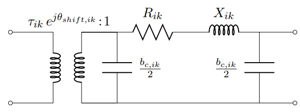
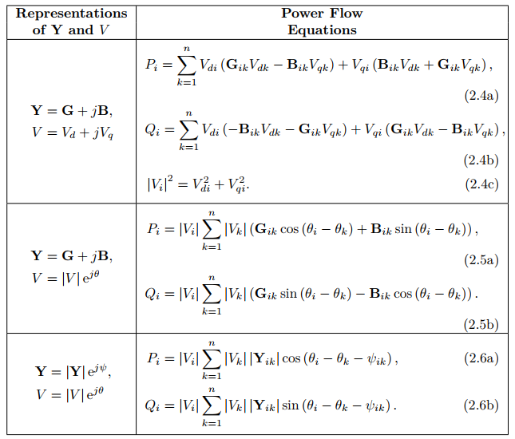

Mathematical Model
- Power Flow Model
- Nodal Constraint Model
- Generator Cranking Model
- Generator Dispatch Model
- Load Dispatch Model
Sets, Parameters and Variables
Power Flow Model
The formulations of branch constraints are implemented in function form_branch.
AC power flow
The typical π-circuit line model with an ideal transformer is used to model the standard "AC" power flow: 
The Y-bus can be formulated as follows: 
Three representations of AC power flow can be found below: 
(Ref: Molzahn, Daniel K., and Ian A. Hiskens. "A survey of relaxations and approximations of the power flow equations." Foundations and Trends® in Electric Energy Systems 4, no. 1-2 (2019): 1-221.)
DC power flow
The standard "DC" approximation to AC power flow linearizes these equations by using the approximations $v_{i}=v_{j}=1$, $sinα_{ij}=α_{ij}$, $cosα_{ij}=1$, and $b_{l}>>g_{l}=0$ yielding:
Linearized AC power flow
Expanding the line flows about $v_{i}=v_{j}=1$, $α_{ij}=0$ and making small-angle approximations $sinα_{ij}=α_{ij}$ and $cosα_{ij}=1$ yielding linearized AC power flow
where voltage and reactive power are retained.
(Ref: Trodden, Paul A., Waqquas Ahmed Bukhsh, Andreas Grothey, and Ken IM McKinnon. "Optimization-based islanding of power networks using piecewise linear AC power flow." IEEE Transactions on Power Systems 29, no. 3 (2013): 1212-1220.)
Linearized AC power flow with bus and line energization
Nodal Constraint Model
The formulations of nodal constraints are implemented in function form_nodal.
- Voltage Constraint
- voltage deviation should be limited
- voltage constraints are only activated if the associated line is energized
- Angle Difference Constraint
- angle difference should be limited
- angle difference constraints are only activated if the associated line is energized
- Generator and Bus Energizing Logics
- on-line generator cannot be shut down
- bus should be energized before the connected genertor being on
- Bus Energized Constraints
- bus energized indicating generator energized
- on-line buses cannot be shut down
- Nodal Power Balance Constraint
Generator Cranking Model
The formulations of generator cranking constraints are implemented in function form_bs_logic.
The capacity curve for non-black start generator is simplifed and modeled as a piecewise linear function of time shown below.

(Ref: Qiu, Feng, and Peijie Li. "An integrated approach for power system restoration planning." Proceedings of the IEEE 105, no. 7 (2017): 1234-1252.)
Once a non-black start generator is on, that is, $y_{g,t}=1$, then it needs to absorb the cranking power for its corresponding cranking time. "After" the time step that this unit satisfies its cranking constraint, its power goes to zero; and from the next time step, it becomes a dispatchable generator
- set non-black start unit generation limits based on "generator cranking constraint"
- cranking constraint states if generator g has absorb the cranking power for its corresponding cranking time, it can produce power
Mathematically if there exist enough 1 for $y_{g,t}=1$, then enable this generator's generating capability. There will be the following scenarios
- (1) generator is off, then $y_{g,t}-y_{g,t-Tcr_{g}} = 0$, then $pg_{g,t} = 0$
- (2) generator is on but cranking time not satisfied, then $y_{g,t} - y_{g,t-Tcr_g} = 1$, then $pg_{g,t} = -Pcr_g$
- (3) generator is on and just satisfies the cranking time, then $y_{g,t} - y_{g,t-Tcr_g} = 0$, $y_{g,t-Tcr_g-1}=0$, then $pg_{g,t} = 0$
- (4) generator is on and bigger than satisfies the cranking time, then $y_{g,t} - y_{g,t-Tcr_g} = 0$, $y_{g,t-Tcr_g-1}=1$, then $0 <= pg_{g,t} <= pg^{\max}_{g}$
All scenarios can be formulated as follows:
Generator Dispatch Model
The formulations are implemented in function form_gen_logic.
- Generator ramping rate constraint
- Black-start unit is determined by the cranking power
- On-line generators cannot be shut down
Load Dispatch Model
The formulations are implemented in function form_load_logic.
- restored load cannot exceed its maximum values
- restored load cannot be shed